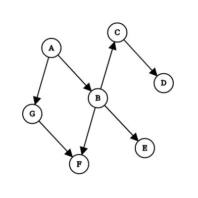

Instrucciones
- Este examen puede ser realizado de forma individual o de a parejas.
- Debe ser entregado al correo electrónico christian.poveda+ipc_examen02@correo.usa.edu.co a mas tardar el 2020-04-22 al comienzo de la clase, de acuerdo a lo establecido en el syllabus respecto al método de entrega.
Enunciado
El propósito de este taller es escribir una herramienta que le permita encontrar un orden topológico para cualquier grafo y utilizar dicha herramienta para resolver algunos problemas. Extienda el siguiente programa como se menciona en la sección de ejercicios y luego resuelva los problemas en la sección de problemas.
class Nodo:
def __init__(self, contenido):
self.contenido = contenido
self.vecinos = []
def agregar_vecino(self, indice_vecino):
self.vecinos.append(indice_vecino)
def __repr__(self):
return "Nodo(" + str(self.contenido) + ")"
class Grafo:
def __init__(self):
self.nodos = []
def agregar_nodo(self, contenido):
self.nodos.append(Nodo(contenido))
Representación
El programa que se le entrega cuenta con dos clases:
- La clase
Grafocon un único atributonodos, el cual es una lista que contiene objetos de claseNodo. - La clase
Nodola cual tiene dos atributos:contenido, el cual representa el contenido puntual del nodo, yvecinosel cual es una lista con los índices de los vecinos del nodo. Estos indices se toman respecto a la lista de nodos que contiene la claseGrafo.
A manera de ejemplo, el siguiente grafo

Se debe representar de la siguiente manera
| Indice | Contenido | Vecinos |
|---|---|---|
0 |
"A" |
[1, 6] |
1 |
"B" |
[2, 4, 5] |
2 |
"C" |
[3] |
3 |
"D" |
[] |
4 |
"E" |
[] |
5 |
"F" |
[] |
6 |
"G" |
[5] |
Ejercicios
-
Escriba una función
repetir, la cual recibe dos argumentosvecesyvalor. Esta función debe retornar una lista deveceselementos donde todos los elementos son iguales avalor. Por ejemplo,repetir(3, "Hola")debe retornar["Hola", "Hola", "Hola"]. -
Agregue un método
indice_nodoa la claseGrafo. Este método recibe un argumento adicionalcontenidoy debe retornar el indice del nodo con contenido igual acontenido. Si no hay un nodo cuyo contenido sea igual acontenido, debe retornarNone. Caso de prueba
grafo = Grafo()
grafo.agregar_nodo("A")
grafo.agregar_nodo("B")
print(grafo.indice_nodo("A")) # Debe imprimir `0`
print(grafo.indice_nodo("B")) # Debe imprimir `1`
print(grafo.indice_nodo("C")) # Debe imprimir `None`
- Agregue un método
agregar_aristaa la claseGrafo. Este método recibe dos argumentos adicionalescontenido_desdeycontenido_hasta. Además, este método debe encontrar un nodo con contenido igual acontenido_desdey agregar a la lista de vecinos el indice del nodo con contenido igual acontenido_hasta.
grafo = Grafo()
grafo.agregar_nodo("A")
grafo.agregar_nodo("B")
grafo.agregar_nodo("C")
grafo.agregar_arista("A", "B")
grafo.agregar_arista("A", "C")
print(grafo.nodos[0].vecinos) # Debe imprimir `[1, 2]`
Los puntos 4 y 5 implementan el algoritmo de orden topológico que se expuso en clase. Es conveniente realizar estos dos puntos teniendo en cuenta esta explicación. Usted puede realizar una implementación alternativa del algoritmo o incluso implementar un algoritmo distinto si así lo desea.
-
Agregue un método
visitara la claseGrafo. Este método recibe tres argumentos adicionales: un enteroindicey dos listasvisitadosyorden. Este método debe realizar las siguientes operaciones:a. Cambiar el valor de
visitadosen el indiceindiceporTrue.b. Obtener el nodo con indice
indicedentro de la lista de nodos del grafo.c. Para cada indice
vecinode los vecinos del nodo encontrado en la parte (b) revisar si la listavisitadostiene en la posiciónvecinoel valorFalse. Si es así, llamar el métodovisitarusando como argumentosvecino,visitadosyorden.d. Insertar el nodo encontrado en la parte (b) a la lista
ordenen la posición 0. -
Agregue un método
orden_topologicoa la claseGrafo. Este método no tiene argumentos adicionales y debe:a. Crear una lista
visitadosla cual tienenelementos, todos iguales aFalse.b. Crear una lista
ordenvacía.c. Para cada entero
idesde0hastan. Sivisitadosen la posicióniesFalse, llamar el métodovisitarcon argumentosi,visitadosyorden.d. Retornar
orden.Donde
nes el número de nodos en el grafo.
Si todos los métodos y funciones que se le han pedido en esta sección son
correctos, el método orden_topologico debe retornar una lista con los nodos
del grafo en orden topológico.
Problemas
Haciendo uso de la clase Grafo:
-
Encuentre un orden de ejecución para las tareas en la siguiente lista de restricciones:
- Para ir al parque debo alistar a mi perro.
- Para alistar a mi perro debo haber terminado mi tarea y haberme vestido.
- Para haberme vestido debo haberme bañado.
- Para hacer mi tarea debo haber organizado el escritorio.
-
Resuelva el problema 2 del taller 4.